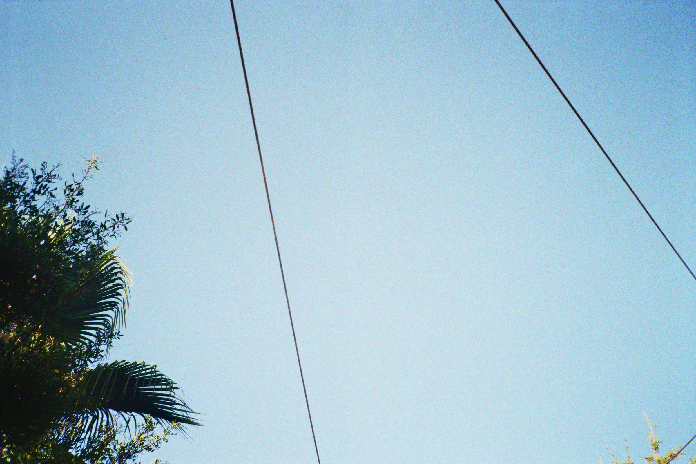
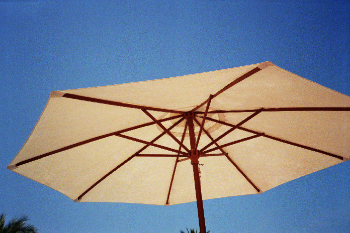
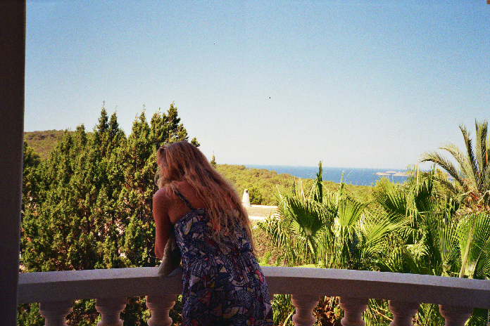

Sofia Brinkmann
- 21 years old
- Berlin based
- student of Communications Design at HTW Berlin
personal informations
- born in Hamburg, highschool graduation in June 2014. Based in Berlin since january 2015, travels to India and south-east-asia for inspirations and experiences.
background
- Bilingual education: mother from Porto (Portugal), father from Duesseldorf (Germany). Both parents are architects as well as my grandfather. My grandmother was a painter. Design and art has always been present through my education. I was always in touch with art and my passion for creativity has followed me through my entire CV and been part of my daily life.
my work
- I am mostly using watercolours, pencils and a mix of different materials.
For photography I am using usually an analogue camera.


